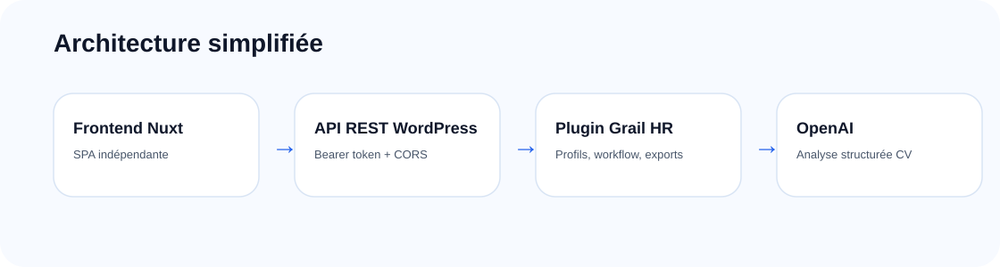

Une séparation claire entre backend WordPress et frontend Nuxt.
WordPress sert de shell métier : API REST, admin, persistance, logs, réglages et sécurité. Nuxt fournit une interface applicative indépendante qui consomme l’API.

Plugin WordPress
Le plugin gère l’authentification, les profils, le workflow, les exports, les logs et les réglages OpenAI.
Frontend Nuxt
L’application Nuxt est une SPA indépendante. En local, elle tourne sur localhost:3000 et appelle l’API REST WordPress.
OpenAI
L’analyse des CV utilise des sorties structurées afin de normaliser les informations extraites.
Persistance
Les profils sont indexés côté WordPress. Le CV source et le texte brut extrait ne sont pas persistés.
Contextes métier
| Contexte | Responsabilité |
|---|---|
| IdentityAccess | Connexion, tokens, utilisateurs actifs et permissions. |
| CvIntake | Upload PDF temporaire, validation fichier et extraction texte. |
| ProfileAnalysis | Prompt, appel OpenAI, JSON structuré et normalisation. |
| ProfileManagement | CPT, workflow, exports, recherche et tableaux serveur. |
| Settings | Configuration OpenAI, modèle, CORS dev et limites. |